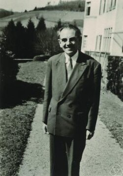

1906-1998
Jean Leray

Portrait: Jacobs, Konrad, CC BY-SA 2.0 de, Wikimedia Commons.
Events (4)
- 1934Leray-Schauder degree and topological methods for nonlinear PDE
originator · Functional & harmonic analysis
- 1946Sheaf theory and sheaf cohomology
originator · Algebraic geometry
- 1951Serre's spectral sequence and homotopy groups
originator · Algebraic topology
- 1976Caffarelli-Kohn-Nirenberg partial regularity for Navier-Stokes
originator · Fluid mechanics